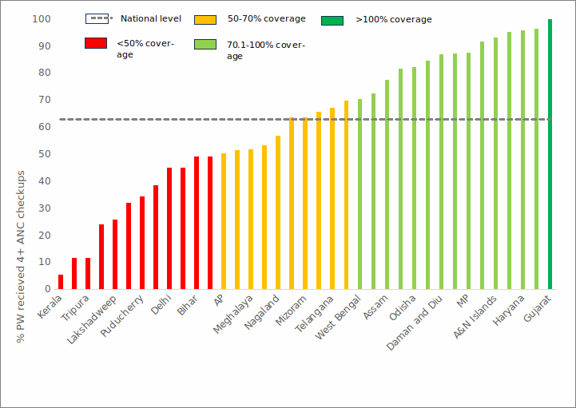
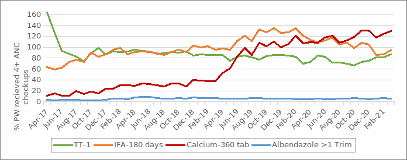
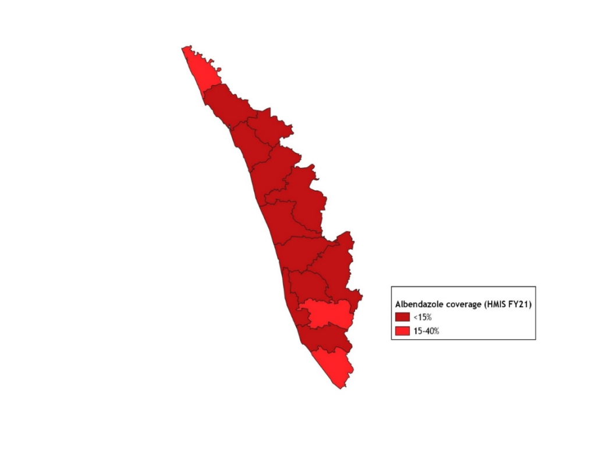
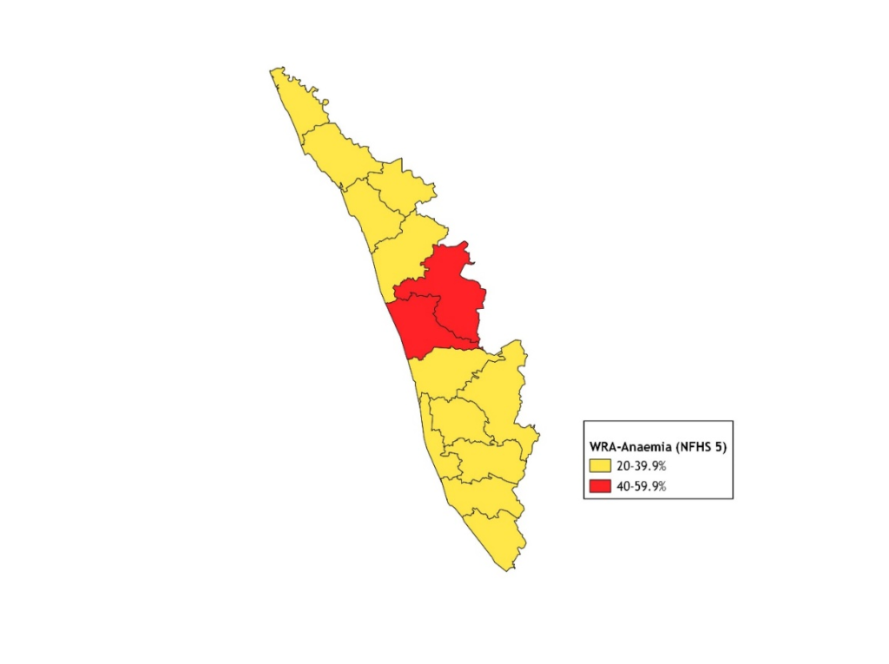
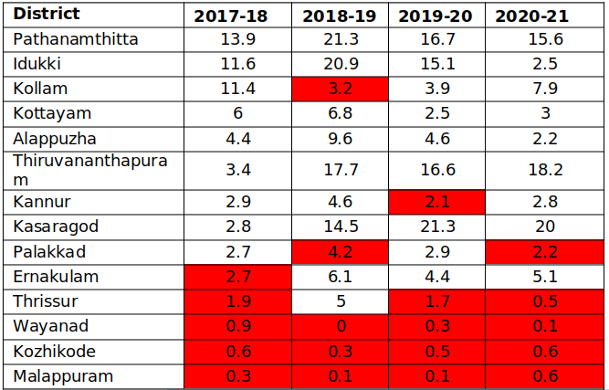

Soil-transmitted helminth (STH) infections are an important cause of the burden of morbidity globally, affecting an estimated 1.5 billion people worldwide, the majority of which are women of reproductive age (WRA) including pregnant women1. STH infections result in severe blood loss and malabsorption of nutrients2. Pregnant women with intestinal worm infections are at an increased risk of maternal complications and adverse outcomes such as anemia, low birth weight, and perinatal mortality1. Deworming is one of the primary preventive approaches to deal with STH globally and its use does not result in adverse birth outcomes2 instead, studies have observed that antenatal deworming reduces the risk of maternal anemia, childhood anemia and stunting, low birth weight, and neonatal mortality3-4.
Ease of single dose administration, high efficacy, absence of serious maternal or fetal side effects, and low cost make albendazole the ideal deworming agent for pregnant women. In recognition of the efficacy and importance of preventive deworming therapy, the WHO recommends administering deworming through anthelminthic drugs like albendazole in pregnant women post the 1st trimester5. In accordance with WHO, the national guidelines on antenatal deworming prescribe a single dose of 400 mg of albendazole after 1st trimester, also recognizing that iron and folic acid tablets are alone inadequate to reduce maternal anemia.6
Kerala is among the states that has a high prevalence of soil-transmitted helminth infections in India, though specific prevalence estimates for pregnant women are lacking.7 This makes the implementation of deworming interventions critical. The Health Management Information System (HMIS) is the only source that monitors critical health indicators below the state level on a monthly basis. In the current policy brief, HMIS data is used to review the coverage of deworming during pregnancy (single dose of Albendazole tablet post 1st trimester). The policy brief examines data from the financial years prior to the onset of the pandemic i.e. FY 2017-18 to 2020-21. The aim of this policy brief is to facilitate understanding of coverage of an important intervention like antenatal deworming and promote its uptake.
Is there adequate coverage of Albendazole in Kerala?
According to the national protocol, albendazole is the recommended drug for deworming during pregnancy. The mandate requires a single dose of albendazole to be done after the 1st trimester of pregnancy6. However as per HMIS data, Kerala has not adhered to this mandate, with the state reporting the lowest coverage in the country well below the national level (Figure 1). Kerala is the only Southern Indian state with low coverage (i.e. <50% coverage) of deworming among pregnant women.

In the past 4 years, there has been little progress in improving deworming coverage for pregnant women in the state. In 2017-18, only 3.6% of pregnant women with 4 or more ANC visits were given 1 albendazole tablet after the 1st trimester and this marginally increased to 5.3% in 2020-21. It is evident that the state must meet the critical gap in deworming coverage to ensure maternal well-being and prevent adverse pregnancy outcomes.
Government guidelines mandate universal administration of one tablet of albendazole to pregnant women post the first trimester in STH endemic regions which have more than 20% prevalence.6 While recent prevalence estimates remain unavailable, a study carried out by Global Atlas for Helminth Infections shows Kerala to be among the states with high STH prevalence (20-49.9%).7 Given the high prevalence of STH in the state, the low priority given to antenatal deworming is troubling.

However, the guidelines that mandate deworming through albendazole tablets and calcium tablets were introduced in the same year i.e. 20146,9. However, the coverage of supplementation of 360 Calcium tablets has improved at a much faster pace than that of albendazole (Figure 2). The IFA and Calcium coverage above 100% in the year 2020-21, means that even the pregnant woman who has less than four ANC visits, have received 180 IFA tablets and 360 Calcium tablets. It is critical that the state government prioritizes provision of antenatal deworming in line with other ANC services.

Fig 4. District wise-coverage of albendazole tablet during pregnancy in FY 21
Antenatal deworming is emphasised as an approach to address the problem of maternal anaemia.6, 10 Yet the districts with the highest rates of anemia among women of reproductive age, which includes pregnant women, also reported the lowest deworming during pregnancy (Figure 4-5).

Fig 5. Anaemia among women in reproductive age across Kerala
Kerala would have to prioritize action in the cluster of districts with the lowest coverage largely located in central and northern parts of the state―Wayanad, Kozhikode, Malappuram, Palakkad and Thrissur. Wayanad, Kozhikode and Malappuram are also the three districts that have consistently reported the lowest coverage between 2017-18 and 2020-21 (Table 1).

Table 1.District wise status of deworming during pregnancy in Kerala as per HMIS 2017-18 to 2020-21.
Coverage of antenatal deworming did not vary significantly throughout the state (Figure 3). In 2020-21, all districts reported poor coverage of deworming (<40%), and the three districts in the northern and southern parts of the state with the highest coverage were also in the red (15.6-20% coverage).
Key Takeaways & Policy Implications
Coverage of antenatal deworming i.e. single dose of albendazole tablet post the first trimester in Kerala is the lowest in the country. Despite the ease to deliver a single dose of Albendazole tablet preferably during the 2nd trimester, the coverage of this intervention is much lower than other ANC services like the distribution of iron and folic acid tablets for a minimum of 180 days from the 2nd trimester and distribution of 360 calcium tablets during the 14th to 40th week of pregnancy. In a state like Kerala that performs well on most health parameters, the reports of the abysmally low coverage of deworming during pregnancy (<15%) is alarming. There is a clear need to improve public awareness of the importance of antenatal deworming to ensure maternal well-being including prevention of anemia. Given the indication of high prevalence of STH infections in the state, identification of STH endemic districts is critical for adequate implementation of national guidelines.
Policy Recommendations
The gap between deworming and other ANC services like IFA distribution indicates that frontline healthcare workers may not perceive its importance. As per guidelines, ANMs and medical officers need to be trained to ensure knowledge of deworming drugs and their administration during the ANC period. ASHAs also need to receive an orientation on the program to support monitoring and counselling for this service.6 Refresher training should also be periodically by the Public Health Department to reiterate the importance of deworming during pregnancy.
Healthcare workers need to increase awareness about the importance of deworming among pregnant women and families during home visits and ANC visits. ASHAs should be given adequate IEC material and job aids for this purpose. At a larger scale, the Public Health Department as part of its Anaemia Mukht Bharat strategy could also periodically initiate efforts for behaviour change communication year-round to ensure compliance to antenatal deworming.
Currently, the incentive structure of ASHAs, the frontline workers that operate at the community level does not appear to support monitoring the consumption of deworming by pregnant women, unlike IFA consumption11. An incentive for ASHAs to monitor deworming consumption during the ANC period could aid its better uptake.
References
- Zegeye, B., Keetile, M., Ahinkorah, B. O., Ameyaw, E. K., Seidu, A. A., & Yaya, S. (2021). Utilization of deworming medication and its associated factors among pregnant married women in 26 sub-Saharan African countries: a multi-country analysis. Tropical Medicine and Health, 49(1), 1-15.
- Gyorkos, T. W., & St-Denis, K. (2019). Systematic review of exposure to albendazole or mebendazole during pregnancy and effects on maternal and child outcomes, with particular reference to exposure in the first trimester. International journal for parasitology, 49(7), 541-554.
- Walia, B., Kmush, B. L., Lane, S. D., Endy, T., Montresor, A., & Larsen, D. A. (2021). Routine deworming during antenatal care decreases risk of neonatal mortality and low birthweight: a retrospective cohort of survey data. PLoS neglected tropical diseases, 15(4), e0009282.
- Traore, S. S., Bo, Y., Kou, G., & Lyu, Q. (2023). Iron supplementation and deworming during pregnancy reduces the risk of anemia and stunting in infants less than 2 years of age: a study from Sub-Saharan Africa. BMC Pregnancy and Childbirth, 23(1), 63.
- World Health Organization. (2017). Guideline: preventive chemotherapy to control soil-transmitted helminth infections in at-risk population groups. World Health Organization.
- MoHFW. (2014). National Guidelines for Deworming in Pregnancy. Ministry of Health & Family Welfare (MoHFW). Government of India.
- GAHI. (n.d.) Distribution of soil transmitted helminth survey data in India. Retrieved from : https://www.thiswormyworld.org/maps/distribution-of-soil-transmitted-helminth-survey-data-in-india
- MoHFW. (2010). Guidelines for Antenatal Care and Skilled Attendance at Birth by ANMs/LHVs/SNs. Ministry of Health & Family Welfare (MoHFW). Government of India.
- MoHFW. (2014). National Guidelines for Calcium Supplementation During Pregnancy and Lactation. Maternal Health Division. Ministry of Health & Family Welfare (MoHFW). Government of India.
- NHM. (n.d.) Anaemia Mukt Bharat 6 interventions. National Health Mission. Retrieved from: https://anemiamuktbharat.info/interventions/
- NHM (n.d.). ASHA incentives – FY 2020-21. National Health Mission.
Authors
Marian Abraham, Prof. Sarthak Gaurav
Marian Abraham is a Senior Research Analyst at the Koita Centre For Digital Health, IIT Bombay.
Prof. Sarthak Gaurav is an Associate Professor at Shailesh J. Mehta School of Management, IIT Bombay.